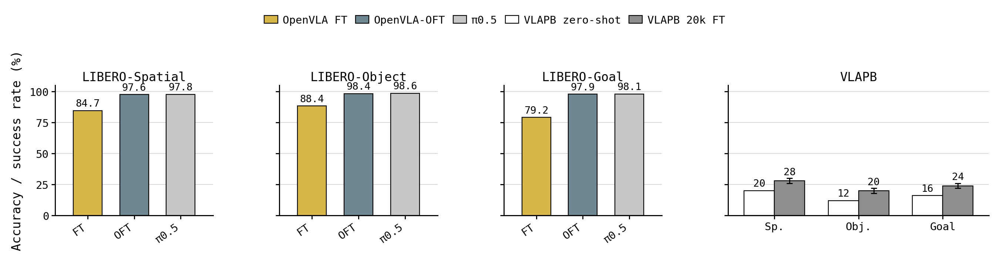
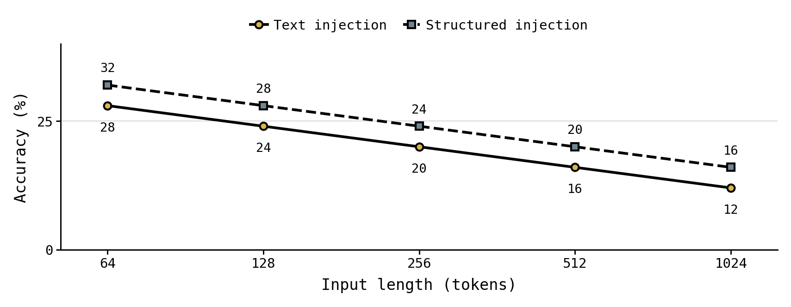

Axis 1
Sensitivity
Whether the model produces P-factor-dependent actions under identical observations and task instructions.
VLA personalization benchmark
A benchmark for testing whether vision-language-action models can condition robot behavior on personalized factors, update those factors over time, and avoid confusing irrelevant or cross-user preferences.

Benchmark idea
VLAPB evaluates whether a model can translate user-specific personalized factors, or P-factors, into correct robot actions under otherwise similar observations and task instructions.
The benchmark separates personalization behavior into controlled suites: sensitivity to preference changes, selectivity under irrelevant context, consistency across new tasks, adaptability after updates, and disentanglement across multiple users.
Concept

Evaluation axes
Whether the model produces P-factor-dependent actions under identical observations and task instructions.

Whether the model uses only task-relevant P-factors from diverse user descriptions.

Infers user-preferred actions consistently from previously provided P-factors in new task contexts.

Updates personalized behavior according to changes in the user's P-factors.

Separates multiple users' P-factors and executes the task according to the target user's preference.
Suite examples

Positioning

Results


Resources
The repository includes VLAPB suite definitions, LIBERO task assets, feasibility review tooling, and scripts used to generate benchmark figures and tables.
docs/
index.html
styles.css
assets/
libero/docs/results/
fig6_libero_vlapb_finetuning_comparison.png
fig8_textual_injection_length_granularity.png